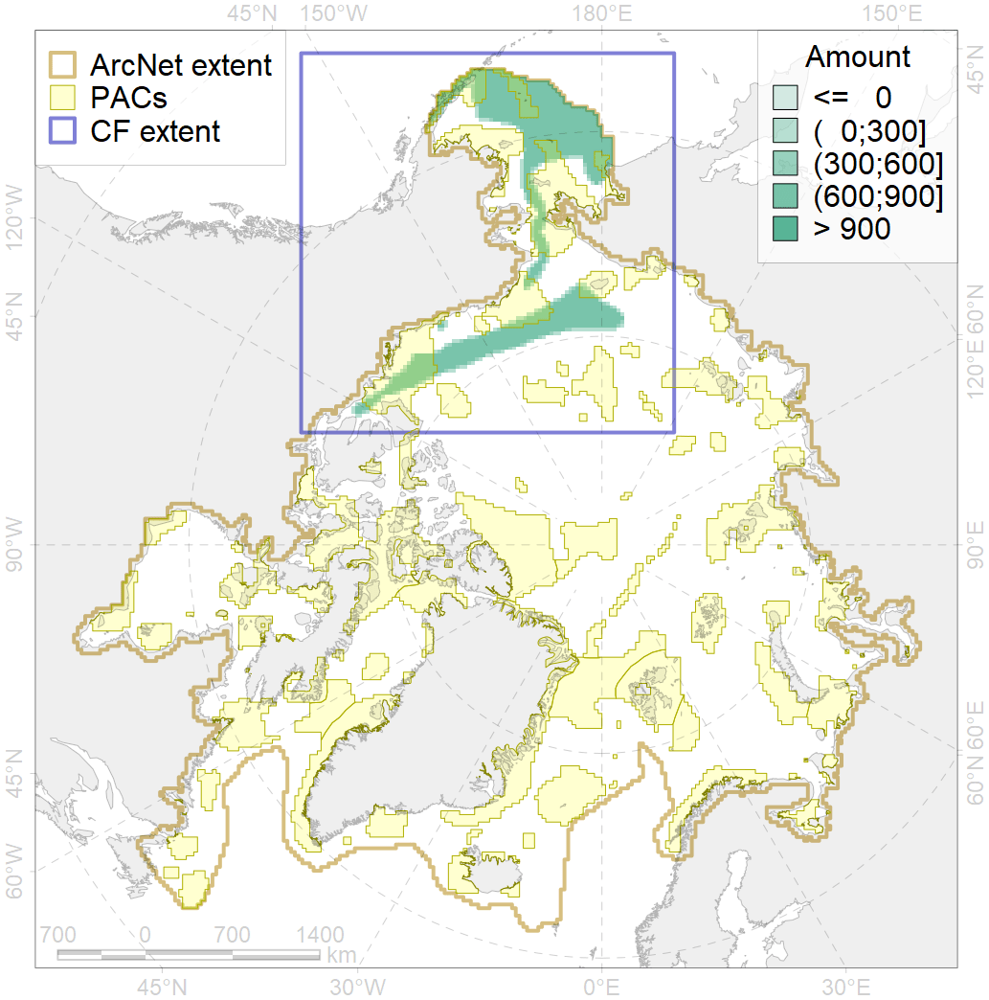
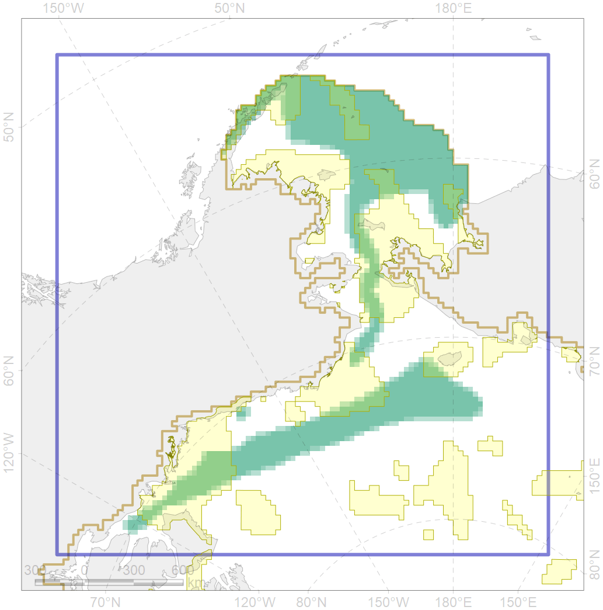

4065

| CF ID | 4065 |
| CF Name | Range of the Pacific Halibut (Reinhardtius hippoglossoides matsuurae) |
| Time Period | 1940s-2010s |
| Source(s) | Chernova, 2011; Coad Reist 2018; Mecklenburg et al., 2018 |
| Seasonality | January-December |
| Depth Horizon | usually 150-1000 m |
| Methodology | Compiled from literature sources based on field observations |
| Author Name | N. Chernova |
| Notes | Chernova (2011) compiled the data of: Andriashev, 1954; Tsinovskii, 1980a; Yang, Livingston, 1988; Barber et al., 1997; Borets et al., 2001; Kuznetsova et al., 2001; Coad, Reist, 2004; Neelov, Chernova, 2005 |
| Conservation Target Set in the Scenario | 0.03 |
| Conservation Target Achieved in the Scenario | 0.292 (Scenario: 971.9%) |
| PAC ID | Proportion in the PAC | Contribution to ArcNet Target Achievement | PAC’s Contribution to the Achieved Target |
|---|---|---|---|
| 1 | 5.2% | 170.8% | 17.6% |
| 2 | 4.4% | 121.2% | 12.5% |
| 4 | 1.6% | 43.4% | 4.5% |
| 5 | 6.0% | 181.4% | 18.7% |
| 7 | 0.8% | 23.8% | 2.4% |
| 60 | 2.6% | 78.0% | 8.0% |
| 62 | 7.3% | 224.5% | 23.1% |
| inner | 27.9% | 842.9% | 86.7% |
| outer | 72.1% | 129.0% | 13.3% |